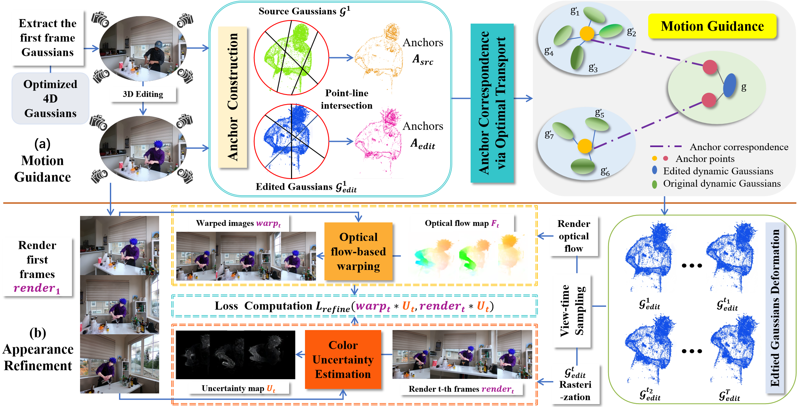
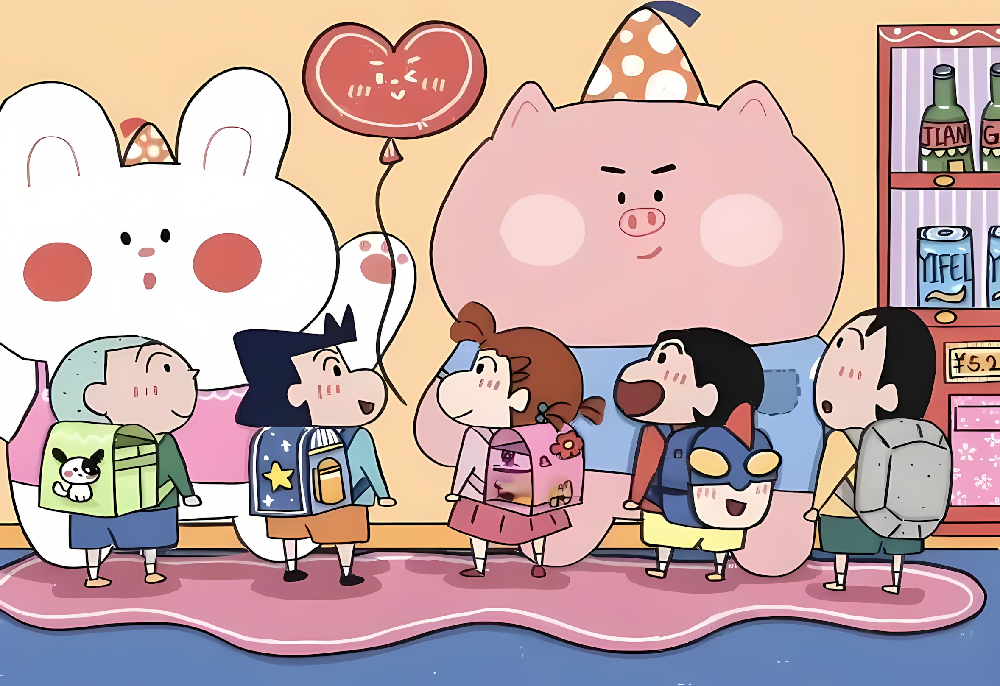
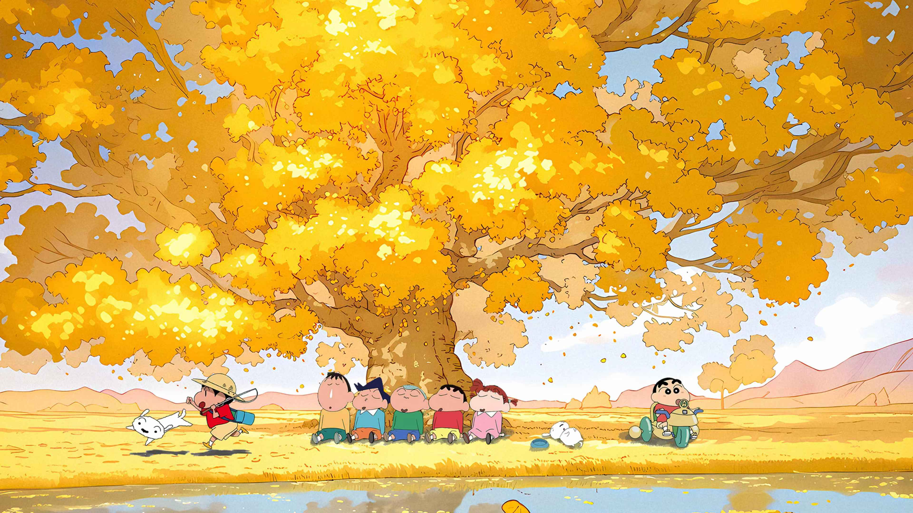
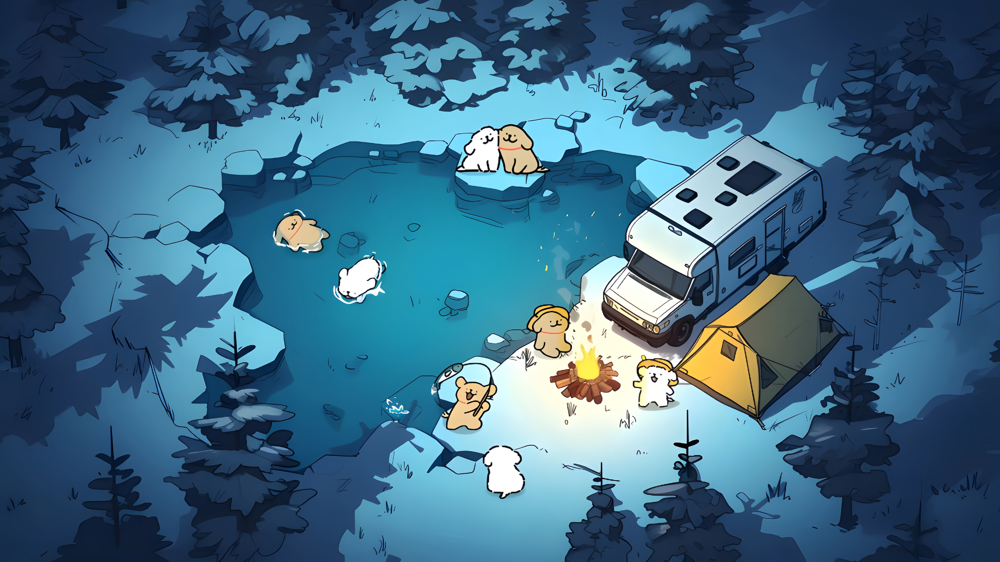
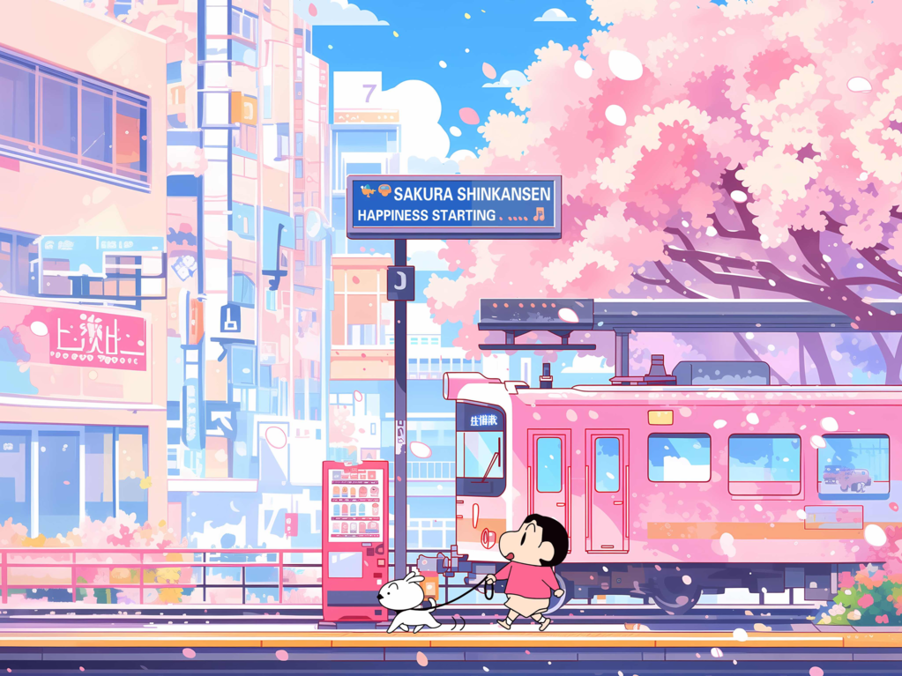

Recent advances in 3D scene editing using NeRF and 3DGS enable high-quality static scene editing. In contrast, dynamic scene editing remains challenging, as methods that directly extend 2D diffusion models to 4D often produce motion artifacts, temporal flickering, and inconsistent style propagation. We introduce Catalyst4D, a framework that transfers high-quality 3D edits to dynamic 4D Gaussian scenes while maintaining spatial and temporal coherence. At its core, Anchor-based Motion Guidance (AMG) builds a set of structurally stable and spatially representative anchors from both original and edited Gaussians. These anchors serve as robust region-level references, and their correspondences are established via optimal transport to enable consistent deformation propagation without cross-region interference or motion drift. Complementarily, Color Uncertainty-guided Appearance Refinement (CUAR) preserves temporal appearance consistency by estimating per-Gaussian color uncertainty and selectively refining regions prone to occlusion-induced artifacts. Extensive experiments demonstrate that Catalyst4D achieves temporally stable, high-fidelity dynamic scene editing and outperforms existing methods in both visual quality and motion coherence.

Overview of Catalyst4D. Given the first-frame edited dynamic Gaussians, our (a) Anchor-based Motion Guidance establishes region-level correspondences with the original Gaussians via anchor construction and optimal transport, enabling reliable deformation transfer. Then, (b) Color Uncertainty-guided Appearance Refinement leverages first-frame warping and Gaussian color consistency to identify and correct motion-induced artifacts across time.




Original Scene
Turn him into a Minecraft character
Make him wear shoulder armor
Original Scene
Turn his hat into a newsboy cap
Make him wear a suit
Original Scene
Make the torch carved from a flawless emerald
Turn the torch into Pop art style
Original Scene
Turn the extruder into coral style
Make the extruder covered in glacial ice